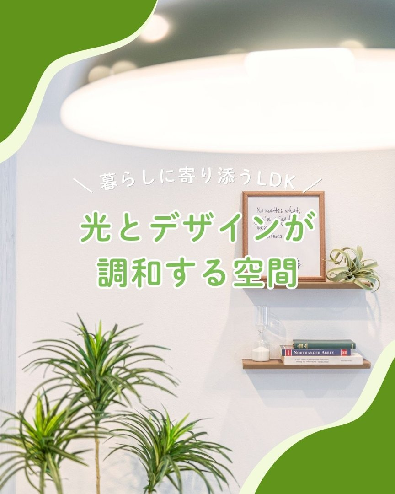
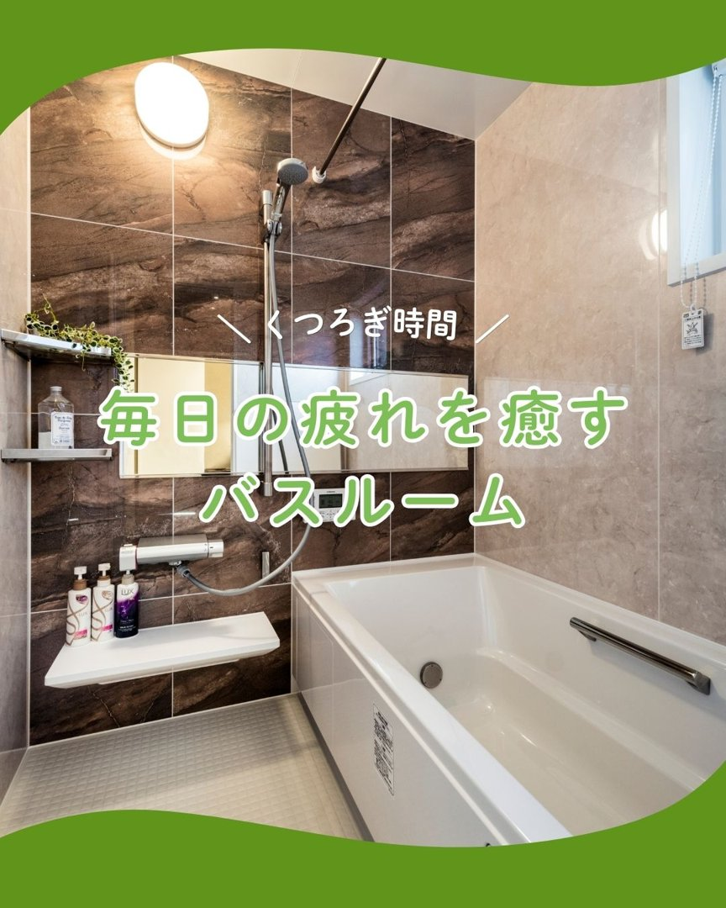
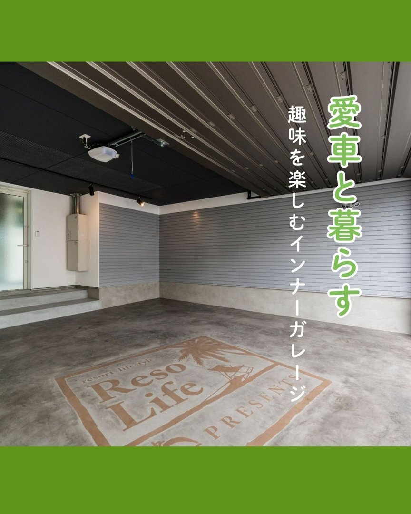
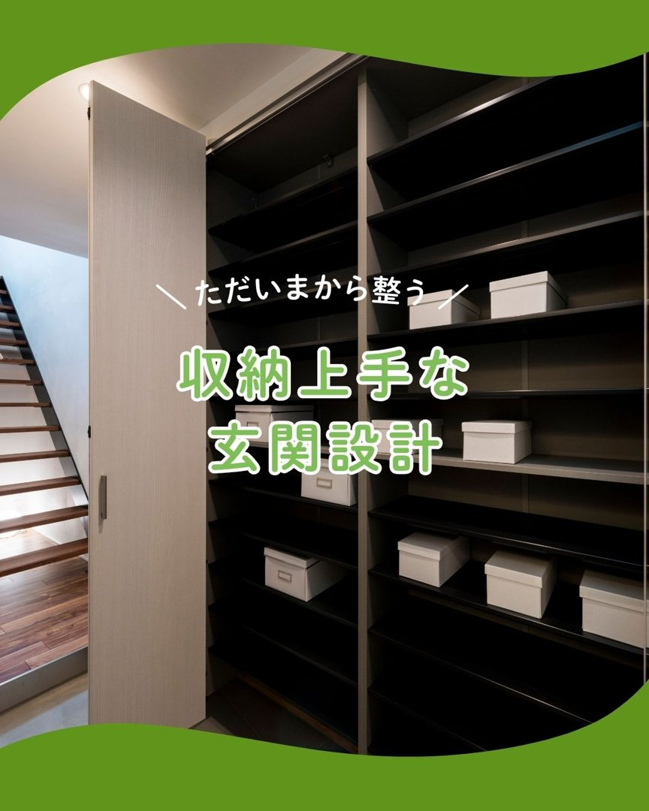

リフォーム・リノベーション
間取りの変更から内装まで、家の持ち味を活かしたリフォームをご提案します。
家の持ち味を活かして、今より住み心地の良い家へ。
ツツイホームは、藤沢市菖蒲沢に拠点を置く工務店です。リフォームの良い点は「同じ家に住み続ける」こと。家の持ち味を活かしながら、暮らしに合った空間へと変えていきます。
水回りや外回りの修繕のような日常の小さな困りごとから、注文住宅まで。土地探しや不動産のご相談も含め、住まいの窓口として寄り添います。
Services

間取りの変更から内装まで、家の持ち味を活かしたリフォームをご提案します。

キッチン・バス・トイレ。機能的でお手入れしやすい、理想の水回りを叶えます。

屋根や外壁塗装、エクステリアまで。住まいの顔を、技術とアイデアで一新します。

設計から施工、完成まで一人ひとりに合った注文住宅。耐震診断（無料）や補強のご相談も。
Works
写真をタップすると大きく見られます
Reasons
藤沢に根差して25年以上。地域の住まいと向き合ってきました。
木造・鉄筋コンクリート造の耐震診断士が在籍。建設業許可 神奈川県知事許可（般-29）第78713号。
土地探し・不動産の窓口も持つため、「家を建てたい」の最初の段階からサポートできます。
水回りや外回りの修繕など、日常の小さな悩みにも寄り添った提案と施工を行います。
Flow
お電話やInstagramのDMから、お住まいの気になるところをお聞かせください。
現地を確認し、プランと費用をご案内します。
工程をご説明しながら、丁寧に施工します。
仕上がりを一緒に確認。アフターのご相談も承ります。
Area
FAQ
はい。水回りや外回りの小さな修繕・改修から承っています。
はい。無料の耐震診断もご利用いただけます。建物の弱点を特定し、適切な補強策をご提案します。
はい。土地探しから注文住宅まで、まとめてサポートします。
Company
| 会社名 | 有限会社 ツツイホーム |
|---|---|
| 所在地 | 〒252-0823 神奈川県藤沢市菖蒲沢215 |
| 電話 | 0466-21-9852 |
| 営業時間 | 8:00〜18:00／日曜定休 |
| 設立 | 1998年（平成10年） |
| 許可 | 建設業許可 神奈川県知事許可（般-29）第78713号 |
| 事業内容 | 注文住宅／リフォーム／水回り／屋根・外壁・エクステリア／耐震診断 |